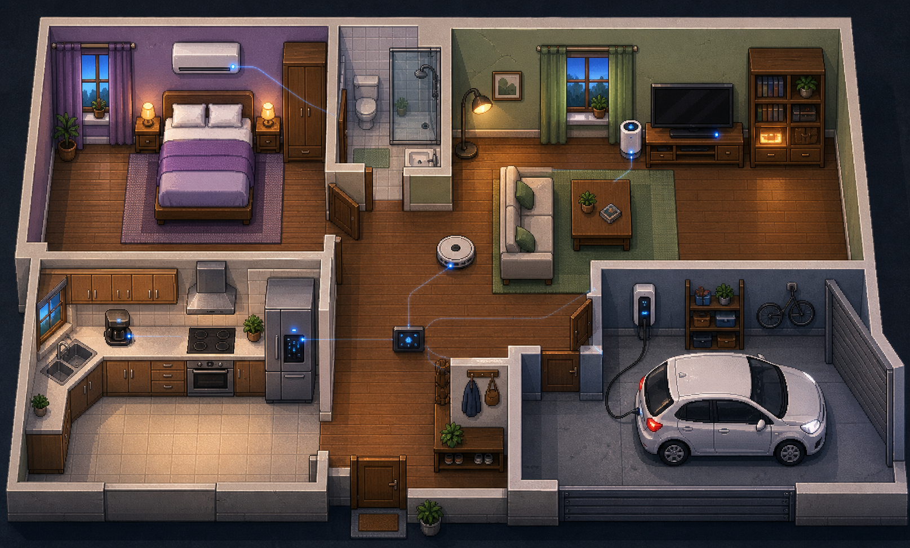

组织上下文
CyberHome 结合角色人设、空间状态与历史记忆；TGAC 结合题目、表结构和业务规则，为模型提供当前任务需要的信息。
PERSONA · SCHEMA · CONTEXT
PROJECT 01 / XIAOMI HACKATHON · 2026
CyberHome 是我参与的小米黑客马拉松项目。我们希望用多 Agent 技术，让用户亲手布置一个有熟悉角色、有共同经历的家；在闲暇或独处时打开，看看这里又发生了什么，让日常陪伴有一个可以回来的地方。

一段实际操作录像，看看空间如何被搭建、日常如何发生，以及角色如何回应你。
CyberHome 结合角色人设、空间状态与历史记忆；TGAC 结合题目、表结构和业务规则，为模型提供当前任务需要的信息。
在家庭空间中生成对话与事件，在数据场景中调用 SQL 工具查询数据库，并利用实际执行反馈推进任务。
通过事件记录、历史记忆和查询轨迹保留运行过程，配合清晰的运行入口，支持回看交互和复现查询。